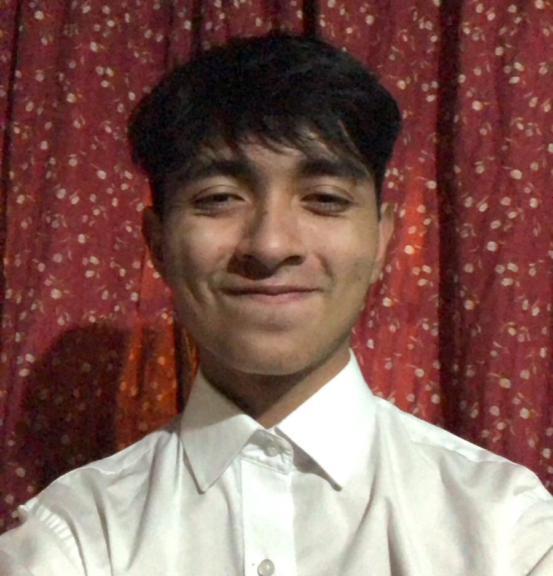

|  | Informción personal |
|---|---|
|
Nombre: Edy Leonel Letona Argueta Correo electrónico: edyletona13@gmial.com Dirección: 4a. Av 11-28 Zona 7 Colonia Landívar Teléfono: (+502) 5164-2475 Género: Masculino Fecha de Nacimiento: 21/02/2005 Ciudad: Ciudad de Guatemala |
|
| Metas para 2023 | |
|
De este año me espero meses de agotamiento, desvelos, etc. Pero primero que nada mi meta este año es poder graduarme, lograr mis objetivos los cuales son, tener claro que voy a seguir estudiando mas adelante, mejorar mi salud emocional, mental y fisica, siempre estar presente con mi familia cuando más me necesiten ya que estamos pasando por un mal momento, aprender ingles en su totalidad, lograr entrar a un equipo de fútbol, acercarme más a Dios (Asistiendo a misa y rezando) y seguir estudiando en un universidad ya que si cabe la posibilidad de trabajar poder ayudar economicamente a mi familia. Para conseguir todo esto debo de dejar de ponerme excusas y dejar de sobrepensar, debo de organizarme de la mejor manera posible y así dar lo mejor de mi y dar ese último paso para llegar este objetivo acabó. |
|
| Algunos intereses | |
|
Clic para ver: Código fuente de mi página web: ⚠️!Gracias por visitar mi página web¡ |
|